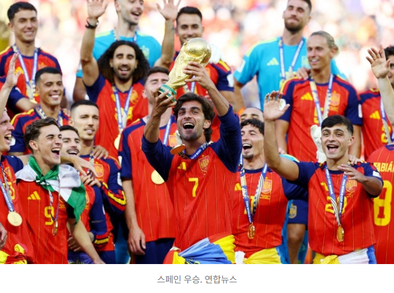
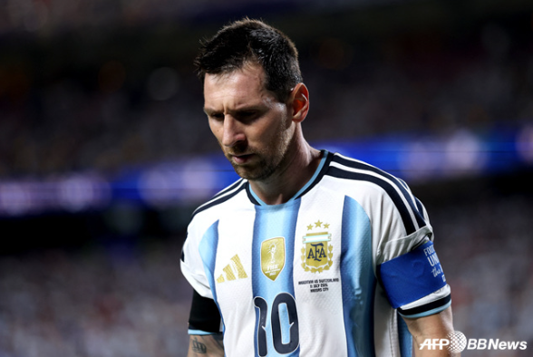

스페인 2026 월드컵 우승…메시의 마지막 도전은 준우승
입력: 2026.07.20

월드컵 우승을 차지한 스페인 대표팀 자료 이미지
스페인이 2026 북중미 월드컵 결승에서 아르헨티나를 연장전 끝에 1대 0으로 제압하고 정상에 올랐다. 페란 토레스가 연장 전반 결승골을 기록했으며, 스페인은 2010년 남아프리카공화국 대회 이후 16년 만에 통산 두 번째 월드컵 우승을 차지했다.
스페인, 연장 승부 끝에 월드컵 정상
2026 북중미 월드컵의 최종 우승팀은 스페인이었다. 스페인은 미국 뉴욕 뉴저지 스타디움에서 열린 결승전에서 디펜딩 챔피언 아르헨티나를 상대로 120분 동안 이어진 치열한 승부 끝에 1대 0으로 승리했다.
스페인은 경기 초반부터 높은 점유율과 짧은 패스를 앞세워 주도권을 잡았다. 아르헨티나는 수비 숫자를 늘리고 역습 기회를 노렸으며, 에밀리아노 마르티네스 골키퍼의 선방을 앞세워 정규시간 동안 실점을 허용하지 않았다.
양 팀은 전후반 90분 동안 득점하지 못했고 경기는 연장전으로 이어졌다. 스페인은 마지막까지 공격적인 경기 운영을 유지하며 아르헨티나의 수비를 흔들었다.
페란 토레스, 연장전에서 결승골
팽팽했던 승부를 결정한 선수는 페란 토레스였다. 후반 교체로 투입된 페란 토레스는 연장 전반 106분 니코 윌리엄스가 연결한 공을 슈팅으로 마무리하며 결승골을 기록했다.
아르헨티나는 정규시간 막판 엔소 페르난데스가 경고 누적으로 퇴장당해 수적 열세에 놓였다. 스페인은 한 명이 많은 상황에서 경기장을 넓게 활용하며 공격을 이어갔고, 결국 연장전에서 결실을 얻었다.
아르헨티나는 남은 시간 동점골을 노렸지만 스페인의 수비를 뚫지 못했다. 종료 휘슬이 울리자 스페인 선수들은 서로를 끌어안으며 16년 만의 월드컵 우승을 기뻐했다.
2010년 이후 통산 두 번째 우승
스페인이 월드컵 정상에 오른 것은 2010년 남아프리카공화국 대회 이후 두 번째다. 당시 스페인은 결승에서 네덜란드를 연장 끝에 꺾고 처음으로 월드컵 트로피를 들어 올렸다.
이번 대회에서도 스페인의 가장 큰 힘은 조직력이었다. 특정 공격수 한 명에게만 의존하지 않고, 중원과 측면 공격수들이 끊임없이 위치를 바꾸며 다양한 득점 기회를 만들었다.
라민 야말과 니코 윌리엄스 등 젊은 선수들은 빠른 돌파와 창의적인 움직임으로 공격을 이끌었다. 베테랑 선수들도 중요한 순간마다 경기 흐름을 안정시키며 젊은 선수들과 조화를 이뤘다.

아르헨티나 대표팀 주장 리오넬 메시 자료사진
메시, 두 대회 연속 우승 도전은 무산
아르헨티나의 주장 리오넬 메시는 2022년 카타르 월드컵에 이어 두 대회 연속 정상에 도전했지만 준우승으로 대회를 마쳤다.
메시는 39세의 나이에도 아르헨티나 대표팀을 결승까지 이끌며 여전히 뛰어난 경기 운영 능력을 보여줬다. 결승전에서도 공격의 중심 역할을 맡았지만 스페인의 강한 압박과 수비를 상대로 결정적인 득점을 만들지는 못했다.
경기 종료 후 메시는 아쉬운 표정으로 그라운드에 머물렀고, 아르헨티나 선수들과 팬들은 주장에게 박수를 보냈다. 이번 대회가 메시의 마지막 월드컵이 될 가능성이 거론되고 있지만, 아직 대표팀 은퇴 여부가 공식적으로 발표된 것은 아니다.
메시와 야말, 두 세대가 만난 결승전
이번 결승전은 리오넬 메시와 라민 야말의 맞대결로도 관심을 모았다. 메시는 지난 20년 동안 세계 축구를 대표해 온 선수이며, 야말은 스페인의 새로운 세대를 이끌 차세대 스타로 평가받고 있다.
야말은 어린 나이에도 월드컵 결승 무대에서 과감한 돌파와 패스를 보여줬다. 비록 결승골을 기록하지는 못했지만 스페인의 공격에 활력을 불어넣으며 우승에 힘을 보탰다.
한 시대를 대표한 메시와 새로운 시대를 이끌 야말이 같은 결승 무대에 섰다는 점에서 이번 경기는 축구 팬들에게 더욱 특별한 장면으로 남게 됐다.
스페인의 새로운 황금세대 시작
스페인은 이번 우승으로 새로운 황금세대의 시작을 알렸다. 우승 멤버 다수가 아직 젊고, 향후 국제대회에서도 중심 역할을 할 수 있다는 점에서 앞으로의 전망도 밝다.
세밀한 패스와 점유율 축구라는 전통적인 장점에 빠른 측면 공격과 강한 압박이 더해지면서 스페인의 경기 방식도 한층 발전했다는 평가가 나온다.
반면 아르헨티나는 우승을 지키지는 못했지만 두 대회 연속 결승에 진출하며 세계 정상급 경쟁력을 다시 증명했다. 메시 이후 대표팀의 세대교체가 어떻게 진행될지도 앞으로의 중요한 관심사가 될 전망이다.
2026 월드컵 결승 결과 정리
스페인은 아르헨티나를 연장전 끝에 1대 0으로 꺾고 2026 북중미 월드컵 우승을 차지했다. 결승골은 연장 전반 페란 토레스가 기록했다.
스페인은 2010년 이후 통산 두 번째 월드컵 정상에 올랐으며, 아르헨티나는 2022년 우승에 이어 두 대회 연속 결승 진출을 기록했지만 준우승에 머물렀다.
이번 결승은 스페인의 새로운 세대가 세계 정상에 오른 순간이자, 메시로 대표되는 아르헨티나의 한 시대가 마지막을 향해 가는 장면으로 기억될 가능성이 크다.